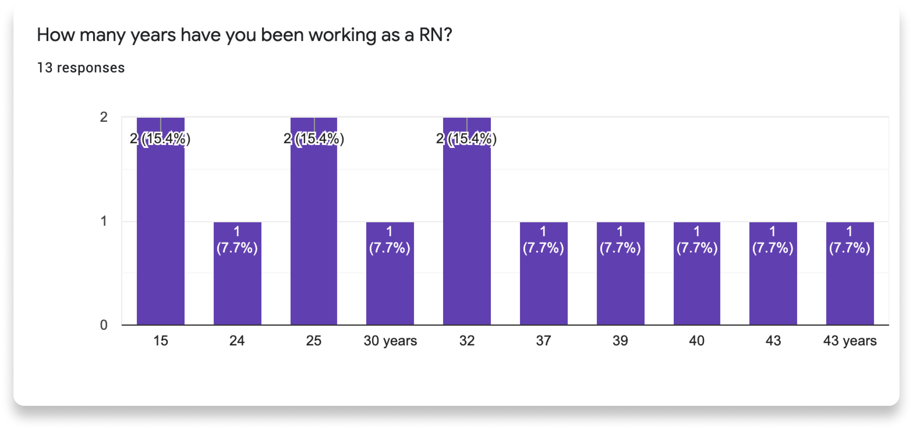
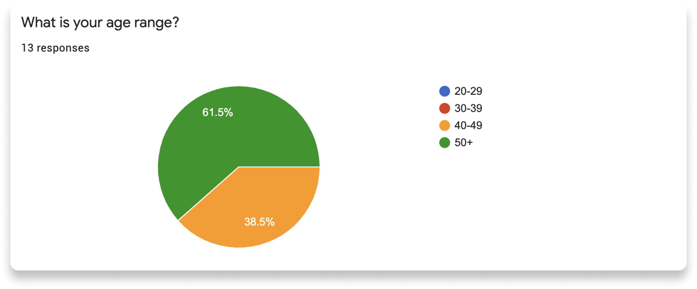

I'm from a family of nurses and I frequently hear how current tech equipment doesn't help improve patient care.
My goal for this project was to identify UX problems and create a storyboarded 3D prototype themed around AR glasses.
DESIGN ROLE
I was a solo UX/UI Designer where I followed the UX process by identifying UX problems through research and used
data from user feedback to drive the user experience flow and visual design.
Timeframe: October 2020 - November 2020.
Tools: Milanote, Pen & Paper, Figma, Microsoft Maquette, Oculus Rift S.
Research
USER RESEARCH
I began my research with user interviews to understand what regularly frustrates nurses during their
work shifts. I conducted a survey from 13 Registered Nurses who have been in the field for at least 25 years; with 61.5% who are over the age of 50.
I learned that technical work (computer and tech equipment) is difficult to handle, especially for aging nurses and it takes away a lot of time from attending to patients. Also, I asked the participants what kind of
technology they think would help improve their work, 41.7% were interested in the use of Extended Reality (XR) devices.


WHAT DOES A RN'S SHIFT LOOK LIKE?
Note: Results are from night-shift nurses at a local hospital in my area.
Practices may differ to other hospitals.
Day Coordinator assigns night shift nurses to at least 5 patients. However, the amount may vary depending on the current situation.
1. Nurses check paper assignments at nurse stations.
2. Short meeting of all nurses with floor coordinator.
3. Review patient list and report to corresponding day nurse.
4. Attend to patients.
5. Perform head-to-toe assessments.
Assessments include vital checks, ordering medicine, administering medicine and maintaing doctor's orders.
6. Return to desk and chart patient conditions.
The Problems
PATIENT CHARTING
From my survey, responders addressed the difficulties of documenting patient information.
During head-to-toe assessments, nurses write down any unusual conditions on paper, but usually rely on memory to document the rest of the assessments onto computer.
This results in cognitive overload as nurses try to remember important information while multi-tasking in an ever-changing environment. Accurate and
detailed charting is critical for nurses and the well-being of patients. Nursing records are the only proof that protects nurses from legal actions if
claims are brought against them.
WHAT'S THE SOLUTION?
AR/Mixed Reality technology
Through research and my interview results, AR/MR technology would be extraordinarily helpful in medical environments. Healthcare workers can interact
with digital interfaces in the real world, that provides an arsenal of assistance at their disposal, such as recording information and directly contacting physicians.
Ideation
STORYBOARD
After identifying the problem, I quickly sketched out a storyboard to illustrate
a hospital room and to determine where the UX would fall in the 3D environment.
2D AND 3D ASSETS
Solutions
TESTING THE PROTOTYPES
I worked with my mom, who is a retired registered nurse, and she tested most of my UI iterations in VR.
Through trial and error, my mom frequently mentioned various "what-if" scenarios and how this or that design wouldn't work.
I thought deeply about making the UX and UI feel natural in a medical environment that would improve the work experience, instead of hindering it.
TEST RESULTS
Finally, I played with the idea of implementing voice into the UI. After designing a voice UI, I tested it with my mom and 2 other nurses.
I received positive feedback from my 3 participants and they liked the idea of using voice to navigate and control the UI. They thought this
idea would help speed up the patient charting process and give assurance that their documentations are accurate.
Conclusion
CLOSING THOUGHTS
Since I'm used to designing 2D screens for web and mobile, it was a challenge at first to work with UI in 3D environments. Although, the
level of creative freedom made this project really fun to work on. Also, I was able to work with XR prototyping tools and learn more about spatial design.
The UX process doesn't seem to change in XR, but I noticed an emphasis on storyboarding to explain how UX/UI works in 3D environments.
Overall, I definitely want to work in the XR industry as a Product Designer as I'm captivated by immersive experiences.